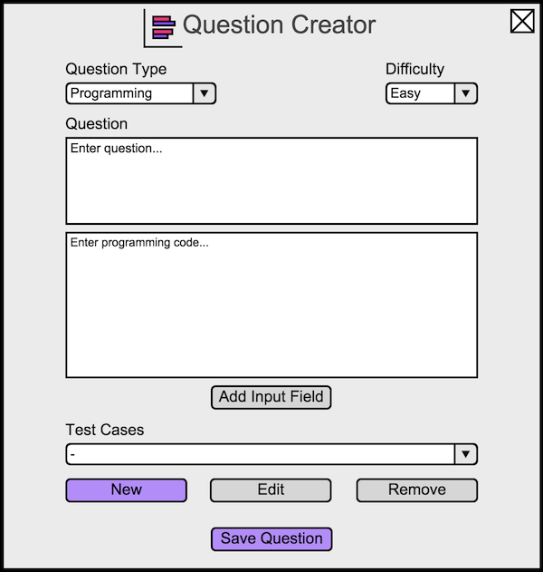
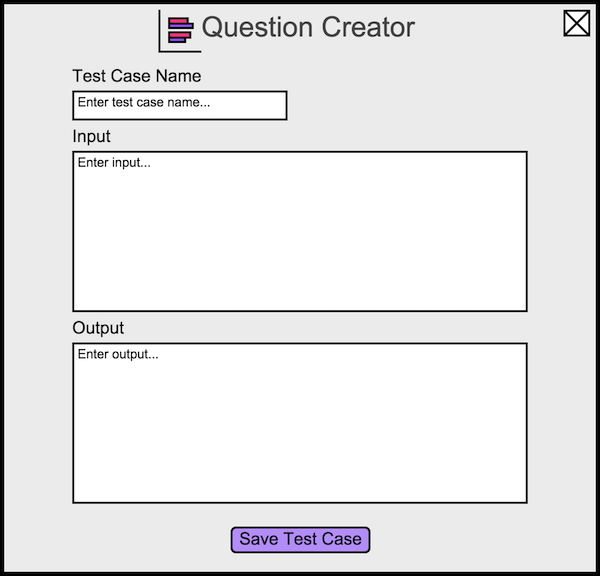
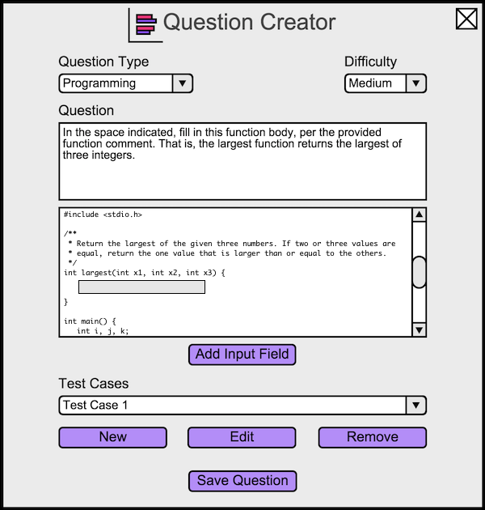

To create a programming question, the instructor opens the question creator dialog, and then changes the question type to Programming.
The instructor sees Figure 12.

Figure 12: Default Programming view.
A programming question is part English and part code. The instructor writes the English portion in the top input box that initally contains 'Enter question...'. The instructor writes the code in the second input box that initally contains 'Enter programming code...'. While writing in the code portion, the instructor selects 'Add Input Field' to add an input field within the code. This input field allows the students to write in their own code to complete the program. The inputted code can range from a portion of a line to several lines.
To grade a programming question, the instructor creates test cases. The drop down menu under the label 'Test Cases' shows all the
current test cases for the question. The instructor adds a test case by selecting 'New' under the test case drop down menu. This opens
a new dialog used for creating test cases, as shown in Figure 13. The instructor selects
'Edit' to edit the currently selected test case, which also opens the dialog shown in
Figure 13. The instructor selects 'Remove' to delete the currently selected test
case.

Figure 13: Default Test Case view.
In the Test Case dialog, the instructor enters the name of the test case in the input box labeled 'Test Case Name'. Under 'Input', the instructor writes the input data for program. This data will be used to test the student's additions to the code portion of the Programming Question Creator (see Figure 12). The instructor enters the correct output for this input under 'Output'. During grading, the program is compiled with the student's additions and runs using the data under 'Input'. The output of this program is compared to the data in 'Output' to check for correctness. The instructor selects 'Save Test Case' to save the changes to this test case.
An example of a filled in question is shown in Figure 14.

Figure 14: A question requiring the completion of the 'largest' function.